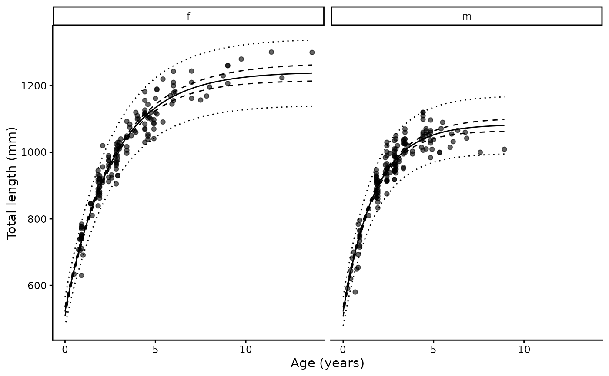

Analyse growth from length at age data
growth.RdFits a von Bertalanffy growth model to length at age data, following Harry et al. (2019), which builds on Cope and Punt (2007). The curve is parameterised by length at birth rather than \(t_0\):
Usage
growth(
len,
age,
grouping_var = NULL,
data,
neonate = NULL,
reads = NULL,
cv_age = NULL,
start = NULL
)Arguments
- len
Numeric vector of lengths
- age
Numeric vector of ages. Used directly when ageing error is off, and as the starting value for true age when it is on.
- grouping_var
Optional grouping variable (typically sex). Separate
LinfandKare estimated per group;L0andCV_Lare shared.- data
A data frame containing the above variables
- neonate
Optional indicator for individuals of known age zero. Anything coercible to logical, e.g.
umb_scar %in% c("y", "p").- reads
Optional replicate age reading columns, e.g.
c(reader1, reader2). Switches on ageing error.- cv_age
Optional ageing CV supplied directly. An alternative to
readswhen only a consensus age is available.- start
Optional named list of starting values for
Linf,K,L0andCV_L. Derived from the data ifNULL.
Value
A one row tibble of class "growth" containing the list columns
data, coefs, preds, mods and neonates.
coefs has one row per group, with L0 and CV_L repeated
since they are shared. mods holds the RTMB objective, the
nlminb result and the sdreport.
Details
$$L_{i,g}(a) = L_0 + (L_{\infty,g} - L_0)(1 - e^{-K_g a_{i,g}})$$
where \(L_{\infty,g}\) and \(K_g\) may differ between groups (typically sexes) while \(L_0\) is shared. Observed length is normally distributed about the curve with a standard deviation proportional to expected length, \(\sigma_{L} = CV_L L_{i,g}\), so variability in length at age grows with size.
Two optional extensions from the paper can each be switched on independently.
Ageing error. Supplying reads, two or more columns of
replicate age readings, treats true age as a random effect. Observed readings
are linked to true age by \(A_{i,j} = a_i + \epsilon\), with
\(\epsilon \sim N(0, (CV_a a_i)^2)\). The ageing CV is computed from the
replicate readings outside the likelihood and held fixed. Alternatively
cv_age supplies that CV directly, which is useful where only a
consensus age is available but the ageing CV is known from elsewhere. With
neither argument, age is treated as measured without error.
Neonates. Supplying neonate, an indicator for individuals of
known age zero such as those with an unhealed umbilical scar, adds their
lengths as direct information on \(L_0\) through
\(L_{0,i} \sim N(L_0, (CV_L L_0)^2)\). Flagged individuals are used only
for this term: any that also carry an age are removed from the length at age
data, since an age-zero observation and a length at birth observation carry
the same information and including both would count it twice.
Estimation is by maximum likelihood using RTMB, with the random
effects integrated out by the Laplace approximation. Confidence intervals on
the fitted curve come from the delta method via sdreport; prediction
intervals add the individual variability \(CV_L\).
References
Cope, J.M. and Punt, A.E. (2007) Admitting ageing error when fitting growth curves: an example using the von Bertalanffy growth function with random effects. Canadian Journal of Fisheries and Aquatic Sciences 64(2), 205–218. doi:10.1139/f06-179
Harry, A.V., Butcher, P.A., Macbeth, W.G., Morgan, J.A.T., Taylor, S.M. and Geraghty, P.T. (2019) Life history of the common blacktip shark, Carcharhinus limbatus, from central eastern Australia and comparative demography of a cryptic shark complex. Marine and Freshwater Research 70(6), 834–848. doi:10.1071/MF18141
Examples
library(ggplot2)
data(spottail)
# Sex-specific growth, with neonates informing length at birth
g <- growth(length, age_agree, sex, data = spottail,
neonate = umb_scar %in% c("y", "p"))
#> The categorical variable sex has 2 levels.
#> 5 neonate(s) with an age were used only for length at birth, not as length at age data.
summary(g)
#> # A tibble: 2 × 17
#> group Linf Linf_lower Linf_upper K K_lower K_upper L0 L0_lower
#> <chr> <dbl> <dbl> <dbl> <dbl> <dbl> <dbl> <dbl> <dbl>
#> 1 f 1242 1216 1268 0.380 0.348 0.412 522. 507.
#> 2 m 1084 1065 1103 0.576 0.522 0.629 522. 507.
#> # ℹ 8 more variables: L0_upper <dbl>, CV_L <dbl>, n <int>, n0 <int>,
#> # cv_age <dbl>, nll <dbl>, AIC <dbl>, convergence <lgl>
plot(g) + xlab("Age (years)") + ylab("Total length (mm)")
